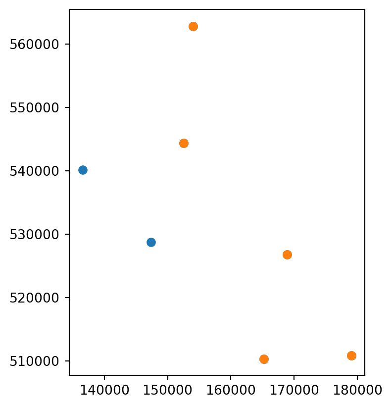
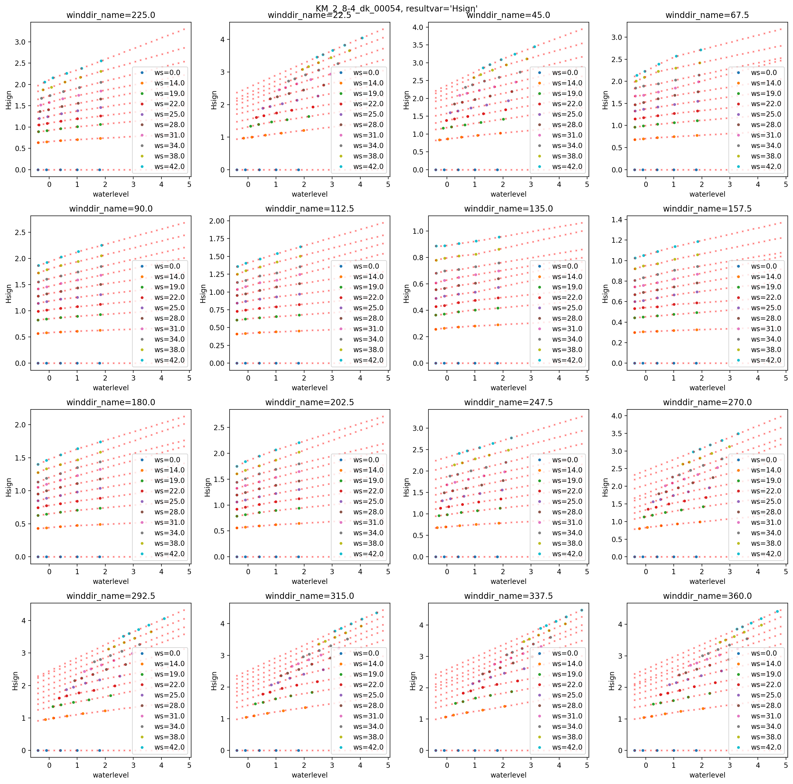

Golfdata van HR-database naar TBCI
In dit voorbeeld laten we zien hoe golfdata van een officiële HR database geëxporteerd kan worden naar een formaat wat bruikbaar is voor de FragilityCurveOvertoppingWaveData module. Globaal betekent dit dat we de relevante uit de HR database de relevante data ophalen, interpoleren en/of extrapoleren naar een regelmatig waterstandsgrid en opslaan in een stel CSV bestanden.
Dit voorbeeld resulteert dan ook in een set aan CSV bestanden. Dit is puur ter illustratie van het voorbeeld, de golfdata kan ook in een database of een ander bestandsformaat opgeslagen worden. Toolbox Continu Inzicht ondersteunt dit ook, maar dat betekent wel dat hiervoor bijbehorende DataAdapters gedefinieerd moeten worden.
import sqlite3
from math import ceil
from pathlib import Path
import geopandas as gpd
import matplotlib.pyplot as plt
import numpy as np
import pandas as pd
from scipy.interpolate import interp1dUitlezen HR data
We zetten eerst een verbinding op met een voorbeeld database.
conn = sqlite3.connect(
Path.cwd()
/ "data_sets"
/ "103.extract_wavedata_hrdb"
/ "Copy_DEMO_IJsselmeer.sqlite"
)In de HR database zijn verschillende tabellen aanwezig die we nodig hebben:
hrd_wind = pd.read_sql("SELECT * FROM HRDWindDirections", conn)
hrd_closingsit = pd.read_sql("SELECT * FROM ClosingSituations", conn)
hrd_inputvar = pd.read_sql("SELECT * FROM HRDInputVariables", conn)
hrd_resultvar = pd.read_sql("SELECT * FROM HRDResultVariables", conn)
hrd_uncert = pd.read_sql("SELECT * FROM UncertaintyModelFactor", conn)
hrd_locs = pd.read_sql("SELECT * FROM HRDLocations", conn)
hrd_locs["geometry"] = gpd.points_from_xy(hrd_locs.XCoordinate, hrd_locs.YCoordinate)
hrd_locs = gpd.GeoDataFrame(hrd_locs, geometry="geometry", crs="epsg:28992")
display(hrd_locs)
display(hrd_wind)
display(hrd_closingsit)
display(hrd_inputvar)
display(hrd_resultvar)
display(hrd_uncert)| HRDLocationId | LocationTypeId | Name | XCoordinate | YCoordinate | WaterLevelCorrection | BedLevel | Acceptatie geometrie | geometry | |
|---|---|---|---|---|---|---|---|---|---|
| 0 | 1 | 4 | YM_2_6-1_dk_01009 | 152538.0 | 544369.0 | 0.0 | -999 | 1 | POINT (152538 544369) |
| 1 | 7 | 4 | YM_2_6-2_dk_01184 | 154001.0 | 562864.0 | 0.0 | -999 | 1 | POINT (154001 562864) |
| 2 | 56 | 4 | YM_2_7-2_dk_00686 | 168890.0 | 526763.0 | 0.0 | -999 | 1 | POINT (168890 526763) |
| 3 | 98 | 4 | YM_2_8-3_dk_00537 | 165227.0 | 510327.0 | 0.0 | -999 | 1 | POINT (165227 510327) |
| 4 | 111 | 4 | KM_2_8-4_dk_00054 | 179050.0 | 510807.0 | 0.0 | -999 | 1 | POINT (179050 510807) |
| 5 | 138 | 4 | YM_2_12-2_dk_00072 | 136587.0 | 540167.0 | 0.0 | -999 | 1 | POINT (136587 540167) |
| 6 | 151 | 4 | YM_2_13-6_dk_00233 | 147407.0 | 528762.0 | 0.0 | -999 | 1 | POINT (147407 528762) |
| HRDWindDirectionId | Direction | |
|---|---|---|
| 0 | 1 | 225.0 |
| 1 | 2 | 22.5 |
| 2 | 3 | 45.0 |
| 3 | 4 | 67.5 |
| 4 | 5 | 90.0 |
| 5 | 6 | 112.5 |
| 6 | 7 | 135.0 |
| 7 | 8 | 157.5 |
| 8 | 9 | 180.0 |
| 9 | 10 | 202.5 |
| 10 | 11 | 247.5 |
| 11 | 12 | 270.0 |
| 12 | 13 | 292.5 |
| 13 | 14 | 315.0 |
| 14 | 15 | 337.5 |
| 15 | 16 | 360.0 |
| ClosingSituationId | Description | |
|---|---|---|
| 0 | 1 | Regular |
| HRDInputColumnId | ColumnName | InputVariableId | UnitFactor | |
|---|---|---|---|---|
| 0 | 1 | WINDS | 9 | 1.0 |
| 1 | 3 | MEERP | 7 | 1.0 |
| HRDResultColumnId | ColumnName | ResultVariableId | UnitFactor | RepairNonDecreasingValues | |
|---|---|---|---|---|---|
| 0 | 1 | ZMAX | 1 | 1.0 | 0 |
| 1 | 2 | Hsign | 2 | 1.0 | 0 |
| 2 | 3 | Tpiek | 4 | 1.0 | 0 |
| 3 | 4 | Dir | 7 | 1.0 | 0 |
| 4 | 8 | Tm-1,0 | 6 | 1.0 | 0 |
| HRDLocationId | ClosingSituationId | HRDResultColumnId | Mean | Standarddeviation | |
|---|---|---|---|---|---|
| 0 | 111 | 1 | 1 | 0.00 | 0.35 |
| 1 | 111 | 1 | 2 | 0.99 | 0.19 |
| 2 | 111 | 1 | 3 | 0.96 | 0.11 |
| 3 | 111 | 1 | 8 | 0.96 | 0.11 |
| 4 | 138 | 1 | 1 | 0.00 | 0.15 |
| 5 | 138 | 1 | 2 | 0.99 | 0.19 |
| 6 | 138 | 1 | 3 | 0.96 | 0.11 |
| 7 | 138 | 1 | 8 | 0.96 | 0.11 |
| 8 | 151 | 1 | 1 | 0.00 | 0.15 |
| 9 | 151 | 1 | 2 | 0.99 | 0.19 |
| 10 | 151 | 1 | 3 | 0.96 | 0.11 |
| 11 | 151 | 1 | 8 | 0.96 | 0.11 |
| 12 | 1 | 1 | 1 | 0.00 | 0.15 |
| 13 | 1 | 1 | 2 | 0.99 | 0.19 |
| 14 | 1 | 1 | 3 | 0.96 | 0.11 |
| 15 | 1 | 1 | 8 | 0.96 | 0.11 |
| 16 | 7 | 1 | 1 | 0.00 | 0.30 |
| 17 | 7 | 1 | 2 | 0.99 | 0.19 |
| 18 | 7 | 1 | 3 | 0.96 | 0.11 |
| 19 | 7 | 1 | 8 | 0.96 | 0.11 |
| 20 | 56 | 1 | 1 | 0.00 | 0.30 |
| 21 | 56 | 1 | 2 | 0.99 | 0.19 |
| 22 | 56 | 1 | 3 | 0.96 | 0.11 |
| 23 | 56 | 1 | 8 | 0.96 | 0.11 |
| 24 | 98 | 1 | 1 | 0.00 | 0.30 |
| 25 | 98 | 1 | 2 | 0.99 | 0.19 |
| 26 | 98 | 1 | 3 | 0.96 | 0.11 |
| 27 | 98 | 1 | 8 | 0.96 | 0.11 |
De locaties aanwezig in de database kunnen we snel geografisch weergeven. in dit voorbeeld gaan we voor vijf locaties de golfdata ophalen (oranje locaties in onderstaande plot)
# subset_hrd_locs = hrd_locs.copy()
subset_hrd_locs = hrd_locs.iloc[
np.arange(0, len(hrd_locs), int(len(hrd_locs) / 4)), :
].copy()
subset_hrd_locs = subset_hrd_locs.iloc[0:5].copy()
ax = hrd_locs.plot()
subset_hrd_locs.plot(ax=ax)
subset_hrd_locs.Name.tolist()['YM_2_6-1_dk_01009',
'YM_2_6-2_dk_01184',
'YM_2_7-2_dk_00686',
'YM_2_8-3_dk_00537',
'KM_2_8-4_dk_00054']
Relevante golfdata ophalen
In de volgende stap gaan we de input- en outputstochasten die aanwezig zijn koppelen met de beschikbare data en locaties. Daarvoor moeten we eerst een aantal objecten definieren: wat de naam is van de lokale waterstand (veelal ZWL) en de namen van de golfparameters. Deze namen hebben default waardes die vaakgebruikt worden, maar het is verstandig om deze namen te checken in de output van de eerder getoonde hrd_inputvar en hrd_resultvar. Tenslotte geven we een vaste stapgrootte op voor het regelmatige waterstandsgrid. In dit voorbeeld gebruiken we daarvoor 0.2 meter, maar dit is vrij instelbaar. Dit is wel een belangrijke parameter voor de uiteindelijke grootte van de data.
# De lokale waterstand koppelen we via id=1 (veelal heet deze ZWL)
wl_name = hrd_resultvar[hrd_resultvar.ResultVariableId == 1].ColumnName.iat[0]
display(f"{wl_name=}")
# De golfdata moet de significante golfhoogte, spectrale golfperiode en de golfrichting bevatten.
# Deze koppelen we via id 2, 6, en 7. Veelal heten deze parameters 'Hs', 'Tm-1,0', 'Wave direction'
wave_param_names = hrd_resultvar[
hrd_resultvar.ResultVariableId.isin([2, 6, 7])
].ColumnName.tolist()
display(f"{wave_param_names=}")
ws_name = hrd_inputvar[hrd_inputvar.InputVariableId == 9].ColumnName.iat[0]
display(f"{ws_name=}")
# Stapgrootte waterstandsgrid (in meters)
wl_stepsize = 0.2"wl_name='ZMAX'""wave_param_names=['Hsign', 'Dir', 'Tm-1,0']""ws_name='WINDS'"Het volgende codeblok koppelt de gegevens aan elkaar en geeft per locatie, per golfparameter het aantal datapunten voor interpolatie en na interpolatie. De interpolatie en extrapolatie is lineair. Voor de golfrichting wordt hierbij rekening gehouden met het feit dat het circulaire data is.
wavevalid = 0
all_df = []
all_df_red = []
for locrow in subset_hrd_locs.itertuples():
cases = []
for row in hrd_inputvar.itertuples():
cases.append(
f"MAX(CASE WHEN i.HRDInputColumnId = {row.HRDInputColumnId} THEN i.Value END) AS '{row.ColumnName}'"
)
for row in hrd_resultvar.itertuples():
cases.append(
f"MAX(CASE WHEN r.HRDResultColumnId = {row.HRDResultColumnId} THEN r.Value END) AS '{row.ColumnName}'"
)
sql = f"""
SELECT
d.HydroDynamicDataId,
d.HRDLocationId,
l.Name AS HRDLocationName,
d.ClosingSituationId,
c.Description AS ClosingSituationName,
d.HRDWindDirectionId,
w.Direction AS HRDWindDirectionName,
{",".join(cases)}
FROM
HydroDynamicData d
INNER JOIN
HRDLocations l ON d.HRDLocationId=l.HRDLocationId
INNER JOIN
ClosingSituations c ON d.ClosingSituationId=c.ClosingSituationId
INNER JOIN
HRDWindDirections w ON d.HRDWindDirectionId = w.HRDWindDirectionId
LEFT JOIN
HydroDynamicInputData i ON i.HydroDynamicDataId = d.HydroDynamicDataId
LEFT JOIN
HydroDynamicResultData r ON r.HydroDynamicDataId = d.HydroDynamicDataId
WHERE
l.Name='{locrow.Name}'
GROUP BY
d.HydroDynamicDataId,
d.HRDLocationId,
d.ClosingSituationId,
d.HRDWindDirectionId;
"""
df = pd.read_sql(sql, conn)
# waterlevel vector
steps = int(np.ceil((df[wl_name].max() - df[wl_name].min()) / wl_stepsize) + 1)
wl_vec = np.linspace(df[wl_name].min(), df[wl_name].max(), steps)
all_result_vars = hrd_resultvar[hrd_resultvar.ColumnName.isin(wave_param_names)]
nbefore = {k: 0 for k in all_result_vars.ColumnName.tolist()}
nafter = {k: 0 for k in all_result_vars.ColumnName.tolist()}
for resultrow in all_result_vars.itertuples():
resultvar = resultrow.ColumnName
for (winddir_id, winddir, ws), group in df.groupby(
["HRDWindDirectionId", "HRDWindDirectionName", ws_name]
):
wavevalid += 1
winddir_id = int(winddir_id)
winddir = round(float(winddir), 2)
ws = float(ws)
data = group[[wl_name, resultvar]].drop_duplicates().to_numpy()
if resultvar == "Wave direction":
angles = np.deg2rad(data[:, 1])
sin_interp = interp1d(
data[:, 0], np.sin(angles), fill_value="extrapolate"
)
cos_interp = interp1d(
data[:, 0], np.cos(angles), fill_value="extrapolate"
)
resultvec = np.rad2deg(
np.arctan2(sin_interp(wl_vec), cos_interp(wl_vec))
)
resultvec = np.mod(resultvec, 360.0)
else:
resultvec = interp1d(data[:, 0], data[:, 1], fill_value="extrapolate")(
wl_vec
)
resultvec[resultvec < 0] = 0.0
ws_group_red = np.vstack([wl_vec, resultvec]).T
nbefore[resultvar] += data.shape[0]
nafter[resultvar] += ws_group_red.shape[0]
df_org = pd.DataFrame(data, columns=["waterlevel", "waveval"])
df_red = pd.DataFrame(ws_group_red, columns=["waterlevel", "waveval"])
for append_vec, dfi in zip([all_df, all_df_red], [df_org, df_red]):
dfi["winddir"] = winddir
dfi["windspeed"] = ws
dfi["hr_locid"] = locrow.HRDLocationId
dfi["hr_location"] = locrow.Name
dfi["waveval_type"] = int(resultrow.ResultVariableId)
dfi["waveval_id"] = wavevalid
append_vec.append(dfi.copy())
print(f"{locrow.Name}: {nbefore}, {nafter}")
all_df = pd.concat(all_df, ignore_index=True)
all_df_red = pd.concat(all_df_red, ignore_index=True)
all_df_redYM_2_6-1_dk_01009: {‘Hsign’: 800, ‘Dir’: 800, ‘Tm-1,0’: 800}, {‘Hsign’: 2880, ‘Dir’: 2880, ‘Tm-1,0’: 2880} YM_2_6-2_dk_01184: {‘Hsign’: 800, ‘Dir’: 800, ‘Tm-1,0’: 800}, {‘Hsign’: 4320, ‘Dir’: 4320, ‘Tm-1,0’: 4320} YM_2_7-2_dk_00686: {‘Hsign’: 800, ‘Dir’: 800, ‘Tm-1,0’: 800}, {‘Hsign’: 3520, ‘Dir’: 3520, ‘Tm-1,0’: 3520} YM_2_8-3_dk_00537: {‘Hsign’: 800, ‘Dir’: 800, ‘Tm-1,0’: 800}, {‘Hsign’: 4480, ‘Dir’: 4480, ‘Tm-1,0’: 4480} KM_2_8-4_dk_00054: {‘Hsign’: 800, ‘Dir’: 800, ‘Tm-1,0’: 800}, {‘Hsign’: 4960, ‘Dir’: 4960, ‘Tm-1,0’: 4960}
| waterlevel | waveval | winddir | windspeed | hr_locid | hr_location | waveval_type | waveval_id | |
|---|---|---|---|---|---|---|---|---|
| 0 | -0.400000 | 0.000000 | 225.0 | 0.0 | 1 | YM_2_6-1_dk_01009 | 2 | 1 |
| 1 | -0.203294 | 0.000000 | 225.0 | 0.0 | 1 | YM_2_6-1_dk_01009 | 2 | 1 |
| 2 | -0.006588 | 0.000000 | 225.0 | 0.0 | 1 | YM_2_6-1_dk_01009 | 2 | 1 |
| 3 | 0.190118 | 0.000000 | 225.0 | 0.0 | 1 | YM_2_6-1_dk_01009 | 2 | 1 |
| 4 | 0.386824 | 0.000000 | 225.0 | 0.0 | 1 | YM_2_6-1_dk_01009 | 2 | 1 |
| ... | ... | ... | ... | ... | ... | ... | ... | ... |
| 60475 | 4.712467 | 4.825155 | 360.0 | 42.0 | 111 | KM_2_8-4_dk_00054 | 6 | 2400 |
| 60476 | 4.909100 | 4.856465 | 360.0 | 42.0 | 111 | KM_2_8-4_dk_00054 | 6 | 2400 |
| 60477 | 5.105733 | 4.887775 | 360.0 | 42.0 | 111 | KM_2_8-4_dk_00054 | 6 | 2400 |
| 60478 | 5.302367 | 4.919085 | 360.0 | 42.0 | 111 | KM_2_8-4_dk_00054 | 6 | 2400 |
| 60479 | 5.499000 | 4.950395 | 360.0 | 42.0 | 111 | KM_2_8-4_dk_00054 | 6 | 2400 |
60480 rows × 8 columns
Als visuele controle is voor een locatie de eerste golfparameter geplot voor alle windrichtingen en windsnelheden. in rood zijn de geïnterpoleerde/geëxtrapoleerde waardes opgenomen.
hr_locid = np.sort(all_df_red.hr_locid.unique())[3]
df1 = all_df[all_df.hr_locid == hr_locid]
df2 = all_df_red[all_df_red.hr_locid == hr_locid]
nplots = len(hrd_wind)
ncols = 4
nrows = int(ceil(nplots / 4))
for waveval_row in hrd_resultvar.itertuples():
resultvar = waveval_row.ColumnName
if resultvar not in wave_param_names[0]:
continue
fig, axs = plt.subplots(
ncols=ncols, nrows=nrows, figsize=(4 * ncols, 4 * nrows), dpi=100
)
for wind_row in hrd_wind.itertuples():
winddir_id = wind_row.HRDWindDirectionId
winddir_name = wind_row.Direction
for ws in np.sort(df1.windspeed.unique()).tolist():
df1i = df1[
(df1.winddir == winddir_name)
& (df1.windspeed == ws)
& (df1.waveval_type == waveval_row.ResultVariableId)
]
df2i = df2[
(df2.winddir == winddir_name)
& (df2.windspeed == ws)
& (df2.waveval_type == waveval_row.ResultVariableId)
]
df1i = df1i.rename(columns={"waveval": resultvar})
df2i = df2i.rename(columns={"waveval": resultvar})
row = int((winddir_id - 1) / ncols)
col = winddir_id - 1 - row * ncols
ax = axs[row, col]
df1i.plot(
ax=ax, x="waterlevel", y=resultvar, marker=".", lw=0, label=f"{ws=}"
)
df2i.plot(
ax=ax,
x="waterlevel",
y=resultvar,
marker="x",
lw=0,
color="red",
markersize=2,
alpha=0.5,
legend=False,
)
ax.set_ylabel(resultvar)
ax.set_title(f"{winddir_name=}")
fig.suptitle(f"{locrow.Name}, {resultvar=}")
fig.tight_layout()
Opslaan van golfdata in TBCI formaat
We gaan de golfdata opslaan in drie bestanden: - waveval_id.csv: bevat de ‘metadata’ van een golfgegevenscombinatie (hr-locatie, windrichting, windsnelheid, golfparametertype) - waveval.csv: bevat de daadwerkelijke gegevens per golfgegevenscombinatie. Zal intern gekoppeld worden aan waveval_id via waveval_id kolom. - waveval_uncert.csv: deze bevat per hr-locatie, sluitsituatie en golfparametertype de modelonzekerheden (normale verdeling met mu/sigma). Dit kan ook via de yaml configuratie van de toolbox ‘globaal’ (voor alle locaties) opgegeven worden. In dat geval is deze tabel niet nodig.
In het volgende codeblok werken we de opgehaalde data om naar waveval_id.csv en waveval_csv.
groupcols = [
"waveval_id",
"waveval_type",
"hr_locid",
"hr_location",
"winddir",
"windspeed",
]
waveval_id_table = []
waveval_table = []
for groupvals, group in all_df_red.groupby(groupcols):
waveval_id_table.append(groupvals)
waveval_table.append(group[["waveval_id", "waterlevel", "waveval"]].copy())
waveval_id_table = pd.DataFrame(waveval_id_table, columns=groupcols)
waveval_table = pd.concat(waveval_table, ignore_index=True)
display(waveval_id_table)
display(waveval_table)| waveval_id | waveval_type | hr_locid | hr_location | winddir | windspeed | |
|---|---|---|---|---|---|---|
| 0 | 1 | 2 | 1 | YM_2_6-1_dk_01009 | 225.0 | 0.0 |
| 1 | 2 | 2 | 1 | YM_2_6-1_dk_01009 | 225.0 | 14.0 |
| 2 | 3 | 2 | 1 | YM_2_6-1_dk_01009 | 225.0 | 19.0 |
| 3 | 4 | 2 | 1 | YM_2_6-1_dk_01009 | 225.0 | 22.0 |
| 4 | 5 | 2 | 1 | YM_2_6-1_dk_01009 | 225.0 | 25.0 |
| ... | ... | ... | ... | ... | ... | ... |
| 2395 | 2396 | 6 | 111 | KM_2_8-4_dk_00054 | 360.0 | 28.0 |
| 2396 | 2397 | 6 | 111 | KM_2_8-4_dk_00054 | 360.0 | 31.0 |
| 2397 | 2398 | 6 | 111 | KM_2_8-4_dk_00054 | 360.0 | 34.0 |
| 2398 | 2399 | 6 | 111 | KM_2_8-4_dk_00054 | 360.0 | 38.0 |
| 2399 | 2400 | 6 | 111 | KM_2_8-4_dk_00054 | 360.0 | 42.0 |
2400 rows × 6 columns
| waveval_id | waterlevel | waveval | |
|---|---|---|---|
| 0 | 1 | -0.400000 | 0.000000 |
| 1 | 1 | -0.203294 | 0.000000 |
| 2 | 1 | -0.006588 | 0.000000 |
| 3 | 1 | 0.190118 | 0.000000 |
| 4 | 1 | 0.386824 | 0.000000 |
| ... | ... | ... | ... |
| 60475 | 2400 | 4.712467 | 4.825155 |
| 60476 | 2400 | 4.909100 | 4.856465 |
| 60477 | 2400 | 5.105733 | 4.887775 |
| 60478 | 2400 | 5.302367 | 4.919085 |
| 60479 | 2400 | 5.499000 | 4.950395 |
60480 rows × 3 columns
De modelonzekerheden van de golfgegevens willen we ook opslaan en gebruiken in waveval_uncert.csv.
uncert = hrd_uncert.merge(
hrd_resultvar[["HRDResultColumnId", "ResultVariableId"]], on="HRDResultColumnId"
)
uncert = uncert[
uncert.ResultVariableId.isin(waveval_id_table.waveval_type.unique())
& uncert.HRDLocationId.isin(waveval_id_table.hr_locid.unique())
].copy()
uncert = uncert.rename(
columns={
"HRDLocationId": "hr_locid",
"ClosingSituationId": "closing_situation",
"ResultVariableId": "waveval_type",
"Mean": "mean",
"Standarddeviation": "stddev",
}
)
uncert = uncert[["hr_locid", "closing_situation", "waveval_type", "mean", "stddev"]]
display(uncert)| hr_locid | closing_situation | waveval_type | mean | stddev | |
|---|---|---|---|---|---|
| 1 | 111 | 1 | 2 | 0.99 | 0.19 |
| 3 | 111 | 1 | 6 | 0.96 | 0.11 |
| 13 | 1 | 1 | 2 | 0.99 | 0.19 |
| 15 | 1 | 1 | 6 | 0.96 | 0.11 |
| 17 | 7 | 1 | 2 | 0.99 | 0.19 |
| 19 | 7 | 1 | 6 | 0.96 | 0.11 |
| 21 | 56 | 1 | 2 | 0.99 | 0.19 |
| 23 | 56 | 1 | 6 | 0.96 | 0.11 |
| 25 | 98 | 1 | 2 | 0.99 | 0.19 |
| 27 | 98 | 1 | 6 | 0.96 | 0.11 |
De bijbehorende dataframes kunnen nu opgeslagen worden als CSV bestanden. Deze CSV bestanden zijn direct bruikbaar in het voorbeeld FragilityCurveOvertoppingWaveData (specifiek voor de class FragilityCurveOvertoppingWaveDataMultiple)
# waveval_table.to_csv("waveval.csv", index=False)
# waveval_id_table.to_csv("waveval_id.csv", index=False)
# uncert.to_csv("waveval_uncert.csv", index=False)Koppelen van hr-locatie naar Toolbox locatie
De locaties in een HR database moeten we nog koppelen aan toolbox vakken. Hiervoor gebruiken we de zojuist afgeleide hr_locid kolom en koppelen we die aan een Toolbox Continu Inzicht section_id en failuremechanismid (in het geval van GEKB is dit 2).
De impliciete aanname die hierbij gedaan wordt is dat de waterstand bij een vak gelijk is aan de waterstand van een voorspelpunt van Toolbox Continu Inzicht. Dit klopt niet helemaal, aangezien de voorspelpunten veelal op de as van de rivier liggen en de HR locaties aan de oever liggen en bij de oever bijvoorbeeld scheefstand kan optreden.
df_locs = pd.DataFrame(
{
"section_id": [10, 11, 12, 13, 14],
"failuremechanismid": 2,
"hr_locid": [13421227, 13421170, 13421114, 13421058, 13421001],
}
)
# df_locs.to_csv("section_hrloc.csv", index=False)
display(df_locs)| section_id | failuremechanismid | hr_locid | |
|---|---|---|---|
| 0 | 10 | 2 | 13421227 |
| 1 | 11 | 2 | 13421170 |
| 2 | 12 | 2 | 13421114 |
| 3 | 13 | 2 | 13421058 |
| 4 | 14 | 2 | 13421001 |
Het voorbeeld hierboven maakt deze koppeling handmatig tussen section_id en hr_locid. het is ook mogelijk om dit automatisch te doen op basis van bijvoorbeeld de centroide van een vak en de dichtsbijzijnde HR-locatie.
We merken hierbij op dat bij de beoordeling van een waterkering niet altijd de dichtsbijzijnde HR-locatie is gekozen. Indien de vakken in Toolbox Continu Inzicht overeenkomen met de beoordelingsvakken, is het waardevol om de gekozen koppelingen tussen HR-locatie en dijkvak in ieder geval te beschouwen ook voor Toolbox Continu Inzicht.
for section_row in df_sections.itertuples():
idx_hrloc = hrd_locs.sindex.nearest(section_row.geometry.centroid, return_all=False, max_distance=None)[1, 0]
hr_locid = hrd_locs.HRDLocationId.iat[idx_hrloc]